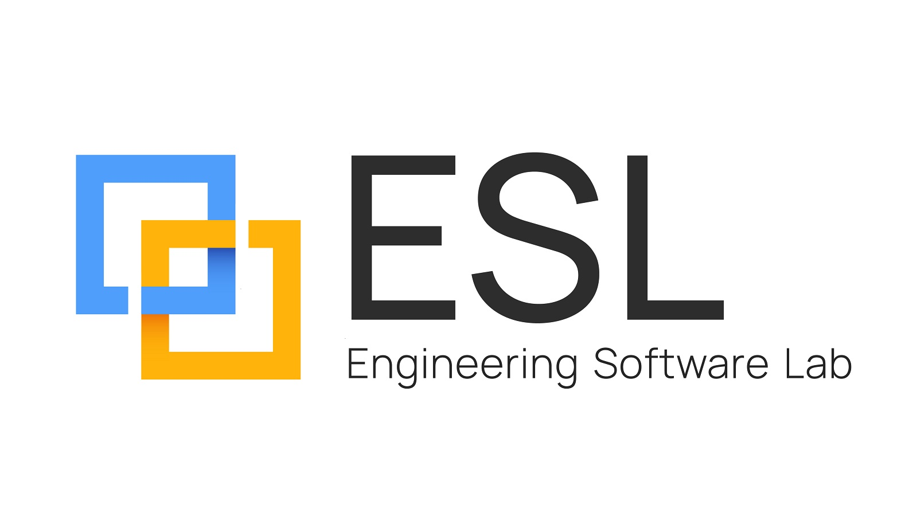

ESL Engineering Software LabThe same 60-line program, before and after reflection, scanned with Parasoft C/C++test against MISRA C++:2023. 29 violations became 4. Then the analyzer told us something the compiler did not.
Daniel Liezrowice, ESL · 29 September 2026 · eswlab.com/contact-us
print_fields() works on any struct. Add a field, the function picks it up. Four pieces: ^^T, nonstatic_data_members_of, template for, [:m:]. No macro, no codegen, no registration list. Everything disappears before main().
Original post by Amadeus Ferro: lnkd.in/p/dndmzJYN
Every workaround reflection replaces is something MISRA C++:2023 already forbids or discourages: X-macros, # stringizing, offsetof, hand-copied field lists. Reflection is the first C++ language feature that deletes violations instead of adding rules.
And the tooling that certifies your code has not caught up yet. This deck measures both halves.
P2996R13 Reflection for C++26 is in the frozen C++26 draft (Croydon, March 2026). template for is a separate paper, P1306 Expansion statements, adopted alongside it.
Released 30 April 2026. Reflection enabled with -std=c++26 -freflection, header <meta>. GCC calls it experimental. Also ships annotations (P3394), define_static_* (P3491), contracts.
Mainline Clang: none. Only the Bloomberg clang-p2996 fork (header <experimental/meta>). MSVC: no public implementation and no published ETA. If you ship on Visual Studio, this is "prepare", not "deploy".
All code in this deck was compiled and executed on GCC 16.1 through Compiler Explorer. Links on the code slides.
| Job | Pre-reflection technique | MISRA C++:2023 | Reflection replacement |
|---|---|---|---|
| Enum to string | X-macro list plus #name stringizing | 19.0.2 Required no function-like macros 19.3.1 Advisory no # / ## | enumerators_of(^^E) + identifier_of(e) |
| Wire-format layout contract | static_assert(offsetof(Frame, f) == N), one per field | 21.2.4 Required offsetof shall not be used | offset_of(m), size_of(m) in one consteval loop |
| Field dump / serializer | Struct listed a second time by hand | No rule. Silent rot: add a field, forget the printer, still compiles. | template for over nonstatic_data_members_of(^^T) |
| Enum names without macros | __PRETTY_FUNCTION__ parsing (magic_enum) | Non-portable, range-limited, compile-time heavy | Exact enumerator list from the compiler |
The rule numbers are from the MISRA C++:2023 first edition. The Parasoft rule IDs are MISRACPP2023-19_0_2-a, 19_3_1-a, 21_2_4-a.
#define FAULT_LIST(X) \ // 19.0.2 X(None) X(OverTemp) X(UnderVoltage) X(SensorTimeout) enum class Fault : std::uint8_t { #define AS_ENUM(name) name, // 19.0.2 FAULT_LIST(AS_ENUM) #undef AS_ENUM }; constexpr const char* to_string(Fault f) { switch (f) { // 9.4.2: no default #define AS_CASE(name) case Fault::name: return #name; // 19.3.1 (#) FAULT_LIST(AS_CASE) #undef AS_CASE } return "<unknown>"; } struct TelemetryFrame { std::uint32_t timestamp_ms; float temp_c; std::uint16_t voltage_mv; std::uint8_t fault; std::uint8_t crc8; }; static_assert(offsetof(TelemetryFrame, timestamp_ms) == 0); // 21.2.4 static_assert(offsetof(TelemetryFrame, temp_c) == 4); // 21.2.4 static_assert(offsetof(TelemetryFrame, voltage_mv) == 8); // 21.2.4 static_assert(offsetof(TelemetryFrame, fault) == 10); // 21.2.4 static_assert(offsetof(TelemetryFrame, crc8) == 11); // 21.2.4 void print_frame(const TelemetryFrame& f) { // the struct, listed again by hand std::printf("timestamp_ms = %u\n", f.timestamp_ms); std::printf("temp_c = %g\n", static_cast<double>(f.temp_c)); std::printf("voltage_mv = %u\n", f.voltage_mv); std::printf("fault = %s\n", to_string(static_cast<Fault>(f.fault))); std::printf("crc8 = %u\n", f.crc8); // Add a field to TelemetryFrame and forget this function: still compiles. }
#include <meta> enum class Fault : std::uint8_t { None, OverTemp, UnderVoltage, SensorTimeout }; template <typename E> requires std::is_enum_v<E> constexpr std::string_view enum_name(E value) { // no macro, no # template for (constexpr auto e : std::define_static_array(std::meta::enumerators_of(^^E))) { if (value == [:e:]) return std::meta::identifier_of(e); } return "<unknown>"; } struct TelemetryFrame { std::uint32_t timestamp_ms; float temp_c; std::uint16_t voltage_mv; Fault fault; std::uint8_t crc8; }; template <typename T> consteval bool is_padding_free() { // replaces 5 x offsetof std::size_t expected = 0; for (auto m : std::meta::nonstatic_data_members_of(^^T, std::meta::access_context::current())) { if (static_cast<std::size_t>(std::meta::offset_of(m).bytes) != expected) return false; expected += std::meta::size_of(m); } return expected == sizeof(T); } static_assert(is_padding_free<TelemetryFrame>(), "TelemetryFrame has padding: wire format broken"); template <typename T> void print_fields(const T& obj) { // one definition of the struct template for (constexpr auto m : std::define_static_array( std::meta::nonstatic_data_members_of(^^T, std::meta::access_context::current()))) { if constexpr (std::is_enum_v<typename[:std::meta::type_of(m):]>) std::println("{:<12} = {}", std::meta::identifier_of(m), enum_name(obj.[:m:])); else std::println("{:<12} = {}", std::meta::identifier_of(m), obj.[:m:]); } }
No warnings with -Wall -Wextra. Byte-for-byte equal to the C++20 binary's output.
uint8_t before timestamp_msBuild fails. The pre-C++26 version needs someone to remember to update five offsetof lines.
seq_no field and WatchdogReset enumerator, nothing elseBoth appear. The pre-C++26 print_frame would still compile and print a stale frame.
Parasoft C/C++test is a static analysis, unit test and coverage tool qualified for ISO 26262, IEC 62304, IEC 61508 and EN 50128 workflows. Its parser is an EDG-based C/C++ front-end that mirrors your real compiler's configuration, so it sees the code the way your build does.
Rules come in two families: compiled checkers (DLL) and RuleWizard pattern rules (.rule files). The three rules this deck cares about, 19.0.2, 19.3.1 and 21.2.4, are all pattern rules cloned from older base rules (PREPROC-28, MISRA2004-19_13, MISRA2004-20_6).
cpptestscan --cpptestscanOutputFile=pre.bdf \
g++ -std=c++20 -c pre_cpp26/fault_telemetry.cpp
cpptestcli -config "builtin://MISRA C++ 2023" \
-compiler gcc_11-64 -input pre.bdf -report reports/pre
C/C++test Standard 2025.2 (engine 10.7.3), built-in MISRA C++ 2023 test configuration, all rules enabled, no suppressions. Compiler profile gcc_11-64 against a local GCC 15.2 toolchain. Same command for the C++26 file with -std=c++26.
Why it matters: in a safety project the analyzer's report is the evidence. If a violation is not in the report, the auditor does not see it. If the parser silently skips code, the report is still green. Keep that in mind for slide 11.
| Rule | Category | Count | Message (as reported) |
|---|---|---|---|
| 19.0.2-a | Required | 2 | Do not define the function-like macro: FAULT_LIST / AS_ENUM (AS_CASE exempt: it uses #) |
| 19.3.1-a | Advisory | 1 | Preprocessor operator # should not be used |
| 19.3.4-a | Required | 5 | Each instance of parameter 'X' / 'name' should be enclosed in parentheses |
| 21.2.4-a | Required | 5 | The macro offsetof shall not be used |
| 9.4.2-a | Required | 1 | There is no 'default' label in a switch statement |
| 0.1.2-a | Required | 5 | Unused function's 'printf' return value |
| 7.0.6-c | Required | 2 | Do not pass uint16_t / uint8_t through the ellipsis parameter |
| 30.0.1-a | Required | 1 | <cstdio> library shall not be used |
| 6.0.3-a, 6.5.1-a, 18.3.1-a | housekeeping | 7 | Global namespace, missing header declaration, no catch(...) in main |
14 of the 29 (bold rows) exist only because of the macro, switch and offsetof workarounds. Another 8 come from printf, which std::println also removes.
| Rule | Count | Message |
|---|---|---|
| 6.0.3-a | 2 | Do not declare 'Fault' / 'print_fields' in the global namespace |
| 6.5.1-a | 1 | 'print_fields' has external linkage and is not declared in the header |
| 18.3.1-a | 1 | 'main' does not contain a catch(...) |
All four are demo-file housekeeping (single translation unit, no namespace). None involve preprocessor, switch, offsetof or I/O.
# operators (was 1)offsetof (was 5)printf ellipsis and ignored-return findings (was 8)Not one suppression, not one deviation record. The code the rules were written against no longer exists.
Fault (line 12) and print_fields (line 52), but not TelemetryFrame (line 26), a plain struct sitting between them.enum_name and is_padding_free, both global, were not flagged either.main). The C++20 file produced 3.A three-line file with int broken = ; between two structs: C/C++test flagged both structs and the broken variable, and printed no parse error. Error recovery is on and silent by default.
Conclusion: the 2025.2 EDG front-end does not yet understand ^^T, [:m:] or template for. It dropped that region, recovered at the next template, and reported a clean scan.
For a safety audit this is the finding. "Fewer violations" is only evidence if the tool parsed the code. Until your analyzer vendor ships P2996 support, a MISRA report on reflection code proves less than it appears to. Ask for the parser status in writing before you rely on it.
protoc, moc, flatc, magic_enum, Boost.PFR, Boost.Describe, cereal macros: each is a dependency with its own CVE feed, licence text and CRA/FDA disclosure line. Reflection collapses serializers, enum tables and layout checks into the compiler you already have.
The compiler now generates what a reviewable tool used to generate. Under ISO 26262-8 §11 and DO-330 the compiler's tool confidence level does not go down; the code it synthesises at compile time has no source artefact to diff in review.
Review the metafunction once (is_padding_free, enum_name), not every generated line. Keep the negative tests from slide 7 in CI: they are the evidence that the metafunction does what the review says.
-freflection on non-shipping code: enum names, layout asserts, test-only field dumps.We run this kind of before/after measurement on client codebases: which modernisation steps remove real violations, which ones only move them, and where the toolchain is not ready yet.
Contact us: https://eswlab.com/contact-us/
builtin://MISRA C++ 2023, compiler profile gcc_11-64, 29 September 2026.